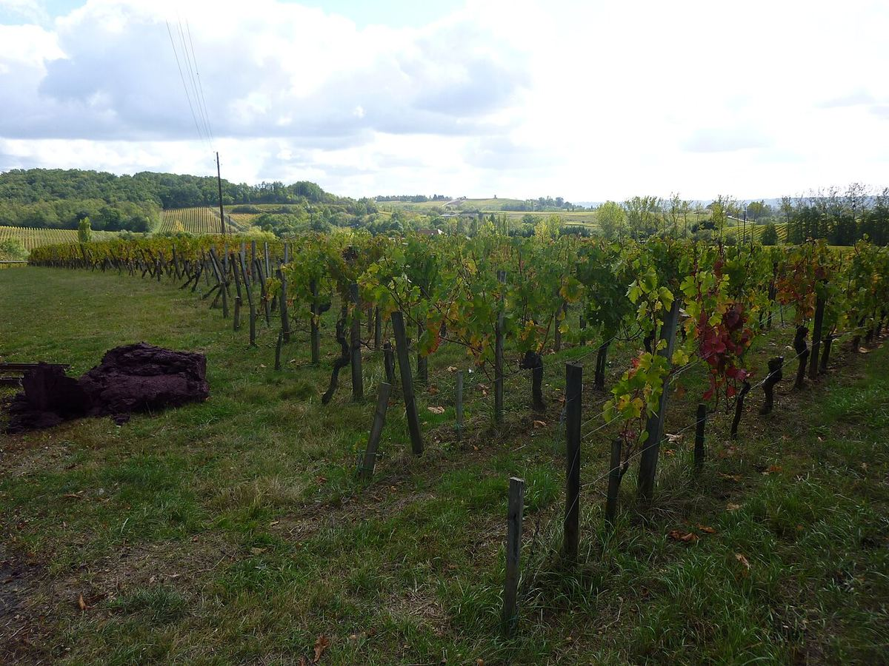

Bordeaux
La Cité du Vin, the château route through the Médoc and the medieval village of Saint-Émilion, a World Heritage site: the great classic of wine tourism.

Bordeaux is the wine city par excellence. Its historic centre and quays on the Garonne, the “Port of the Moon”, are a World Heritage site, and on the riverbank stands La Cité du Vin, a large cultural centre devoted to the wine cultures of the whole world.
The Left Bank
North of the city, the château road runs through the Médoc, with Margaux, Saint-Julien, Pauillac and Saint-Estèphe: great estates with buildings ranging from eighteenth-century classicism to contemporary architecture. To the south lie Graves and Pessac-Léognan, and beyond them Sauternes, where noble rot gives long-lived sweet wines.
The Right Bank
Saint-Émilion, whose jurisdiction has been a World Heritage site since 1999, is a village of golden stone with a monolithic church carved into the rock and underground quarries now used as cellars. Nearby is Pomerol, the kingdom of Merlot.
What to see
- La Cité du Vin.
- Médoc château route.
- Saint-Émilion's monolithic church.
- Sauternes and its châteaux.
When to go
May to October; many châteaux close or limit visits during the harvest (September–October).
Food
Entrecôte bordelaise, Pauillac lamb, Arcachon oysters and canelés.
Tip
The great châteaux almost always require an appointment: book weeks in advance.
Wineries in the area in the encyclopedia
Those marked “visits” offer, according to our information, tours or wine tourism activities.
General information. Opening times, prices and booking rules change: confirm them with each winery or the tourist office before you go. If you drink, don't drive, and drink in moderation.